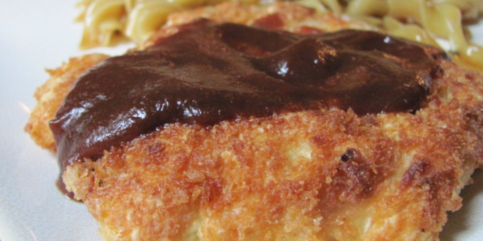
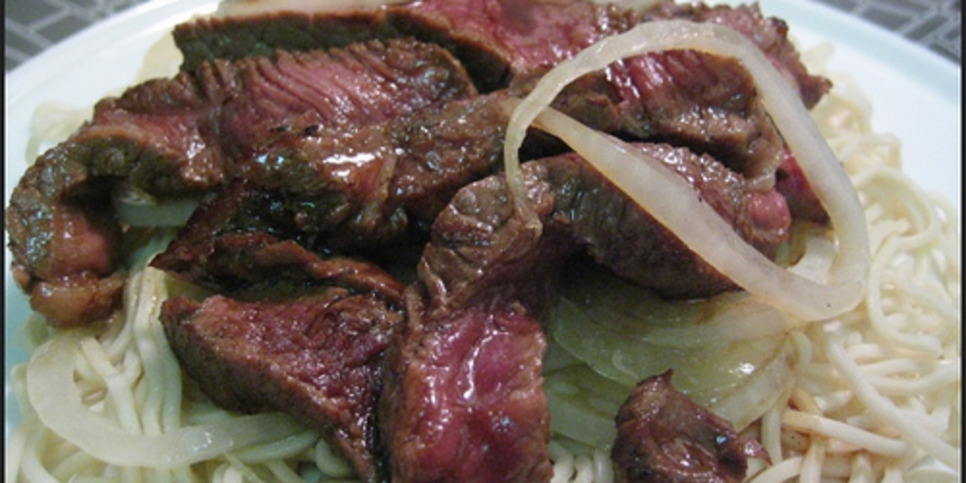
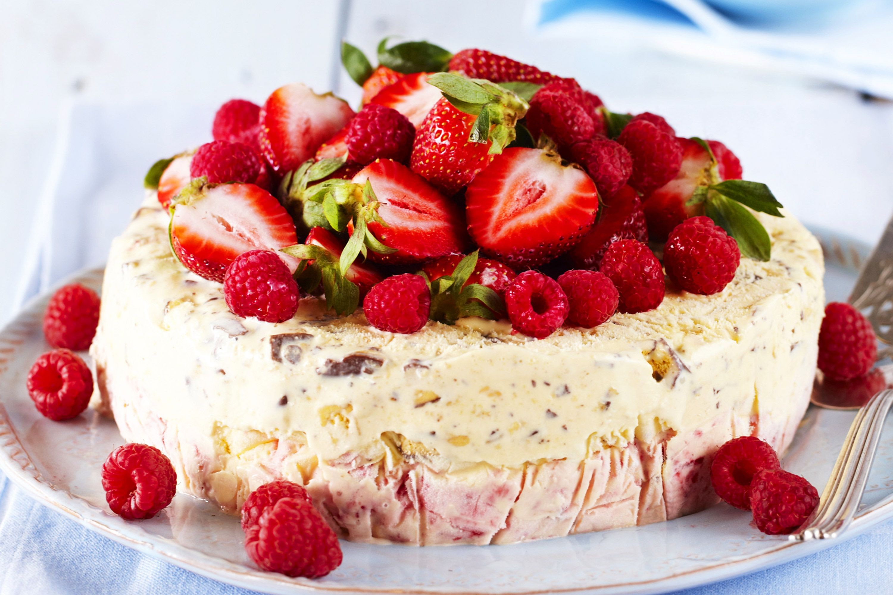

JAPANESE MUM'S CHICKEN
- 8 chicken drumsticks
- 1 cup water
- 1⁄2 cup balsamic vinegar
- 1⁄3 cup soy sauce
- 2 1⁄2 tablespoons sugar
- 1 garlic clove, peeled and bruised
- 1 small hot chili pepper, slit open

YAKISOBA
- 1 lb lean pork loin, sliced thinly
- 1⁄3 cup soy sauce
- 1⁄3 cup rice wine
- 1 1⁄2 tablespoons sugar
- 12 ounces Chinese wheat noodles
- 3 tablespoons vegetable oil
- 1 onion, sliced thin
- 1 lb napa cabbage or 1 lb savoy cabbage
- 3 carrots, grated
- 1 tablespoon chopped ginger
MINADO'S PERFECT SUSHI RICE
- 2 cups sushi rice
- 2 cups water
- 4 tablespoons rice vinegar
- 3 tablespoons sugar
- 2 teaspoons salt
- 2 tablespoons mirin
OKONOMI YAKI
- 1⁄2 small green cabbage
- 1 large carrot, shredded
- 1⁄2onion, diced
- 3 stalks celery, minced
- 2 cups whole wheat flour or 2 cups white flour
- 1 egg, beaten
- 2 tablespoons brown sugar
- 1 teaspoon salt
- 1 can evaporated milk
- enough water, to make a batter
- 1⁄2 cup left over meat

CHICKEN KATSU
- 2 lbs boneless skinless chicken thighs
- 1⁄2 cup flour
- 3 eggs, beaten
- 1 cup Japanese-style bread crumbs
- garlic salt
- oil (for frying)

STEAK TERIYAKI
- 1 -2 onion, sliced into rings
- 1 piece eye steak fillet, about 1 inch thick
- 1 tablespoon sake
- 2 tablespoons mirin
- 2 tablespoons soy sauce
- 1 teaspoon sugar
- salt
- 2 tablespoons oil, divided

Fruited Ice Cream
- 2 cups frozen berries
- 1⁄4 cup Splenda granular
- 1⁄2 cup milk or 1⁄2 cup cream
- 1⁄2 teaspoon vanilla

Chocolate Chip Cookie Ice Cream Cake
- 3/4 cup salted butter, room temperature
- 3/4 cup dark brown sugar
- 1/4 cup sugar
- 1 egg
- 1 1/2 tsp vanilla extract
- 2 cups all purpose flour
- 1 tsp baking soda
- 1 1/4 cups semi-sweet chocolate chips
- 1.5 quarts Cookie Dough Ice Cream
- 4 oz Cool Whip
- Mini Chips Ahoy

Very Chocolate Ice Cream
- 1 1/2 cups heavy cream
- 1 1/2 cups whole milk
- 1/2 cup unsweetened cocoa powder
- 4 ounces semisweet chocolate, finely chopped
- 4 large egg yolks
- 3/4 cup granulated sugar
- 1 teaspoon vanilla extract

Ancho-Rubbed Flank Steak
- 1 tablespoon ancho chili powder
- 2 cloves garlic, chopped
- 1/2teaspoon cinnamon
- 1teaspoon ground cumin
- 1teaspoon onion powder
- 1/2teaspoon salt
- 1/4teaspoon pepper
- 2flank steaks, about 1 1/4 pounds each